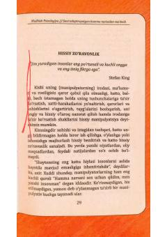

MPHissiy manipulyatsiya va zaharli munosabatlardan xalos bo'lish bo'yicha psixologik qo'llanma.
Ushbu kitob hissiy manipulyatsiya va zo'ravonlikning inson ruhiyatiga ta'sirini tahlil qiladi. Muallif yaqinlar tomonidan amalga oshiriladigan yashirin bosim va o'zini ayblash hissini yengib o'tish yo'llarini tushuntiradi.